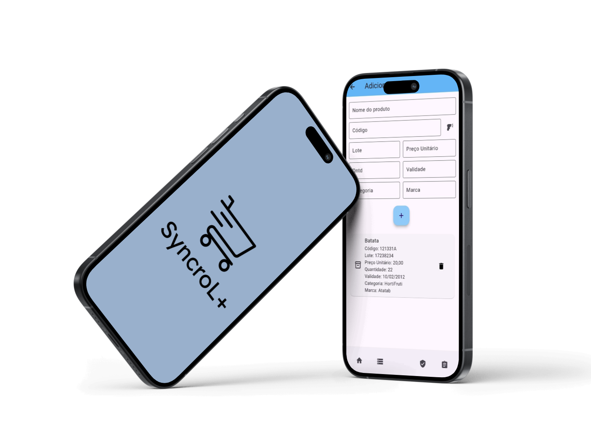

Gerencie seu estoque de forma simples e inteligente com o SyncroL+!
Controle a validade de produtos e mantenha suas prateleiras sempre atualizadas. Simplifique a gestão do seu supermercado com a tecnologia que você precisa.


Controle a validade de produtos e mantenha suas prateleiras sempre atualizadas. Simplifique a gestão do seu supermercado com a tecnologia que você precisa.
COMO FUNCIONA
Selecione o setor do supermercado onde deseja gerenciar os produtos.
Defina a data de validade de cada item para acompanhar de forma precisa e prática os prazos de vencimento.
Monitore e organize os produtos disponíveis, facilitando o controle de entradas e saídas para manter o estoque atualizado.
Nós somos um grupo de estudantes dedicados ao desenvolvimento do SyncroL+, um aplicativo inovador criado para otimizar o controle de estoque e validade de produtos em supermercados.
Com um forte compromisso com a eficiência e a sustentabilidade, nosso objetivo é facilitar a gestão de produtos, proporcionando uma experiência prática e eficaz para supermercados.
"Transformando a gestão de estoque em uma experiência simples e eficiente, porque cada produto conta."
Faça o download do app SyncroL+ para gerenciar o estoque do supermercado, monitorar a validade dos produtos, e receber alertas de vencimento, tudo diretamente no seu dispositivo móvel.